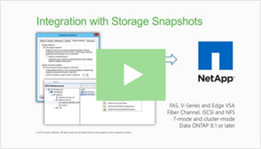

Fast backup and quick recovery from NetApp snapshots with Veeam Availability Suite v8

Watch 3-min video: Veeam is defining the Availability for the Modern Data Cente
Veeam® and NetApp offer the right solution to deliver Availability for the Modern Data Center™. Veeam’s integration with NetApp helps orchestrate Data ONTAP to create application-consistent backups from NetApp storage snapshots, providing NetApp FAS and FlexArray (V-Series) customers with the ability to create image-based backups as often as needed - even during business hours - with little to no impact on production environments.
Explore the benefits of Veeam integration with NetApp
Veeam’s enterprise-level, near-continuous data protection (near-CDP) delivers the best recovery time and point objectives (RTPO™) for all applications in VMware vSphere environments. The combination of NetApp’s low RPO capabilities and Veeam’s low RTO enablement allows users to:
Create backups from storage snapshots up to 20 times faster than competitive offerings
Recover individual items or entire VMs quickly and efficiently from NetApp Snapshot®, SnapMirror® and SnapVault® with Veeam Explorer™ for Storage Snapshots
Improve DR protection by creating instant, secondary backups from storage snapshots
Components of a Veeam backup with FAS storagerVeeam Explorer for Storage Snapshots
In addition to fast backups and quick recovery from NetApp Snapshot, SnapMirror and SnapVault, NetApp FAS and FlexArray (V-Series) customers can meet the most stringent RTPO of Tier-1 applications with:
Fast, application-consistent recovery points by orchestrating NetApp Data ONTAP to create snapshot only backups
Reduce data loss by automating the creation of secondary backups from NetApp SnapVault
Verified protection by automating the testing of backups to guarantee the recoverability of every file, application and virtual machine (VM)
A cloud ready platform that enhances data availability by providing an efficient way to get backups off site to a service provider
Perform fast backups from NetApp Storage Snapshots
Dramatically improve vSphere backup
Taking VMware vSphere snapshots can produce a serious burden on virtual machine (VM) performance, and it can take considerable effort by administrators to overcome this technical challenge and meet the required SLAs.
Veeam dramatically improves this process, providing built-in integration with your production storage, leveraging storage snapshot functionality to reduce the impact on the environment from vSphere snapshot removal during backup and replication.
Don’t be stuck with once-a-day backups for I/O intensive workloads—make backups and replicas as often as every 15 minutes!
A job keeps a VM snapshot for only a brief moment, which results in instant VM snapshot commit
Fast vSphere backups with low RPOs
Storage snapshots can be taken frequently with minimal impact to the production environment, but this can’t be your only backup solution. What if storage itself goes down, or gets corrupted? Even with storage-based replication, you need to take your data out of the single fault domain. This is why many customers prefer to additionally make true backups stored on different storage.
Veeam combines best of both worlds with vSphere snapshots for application-consistent backups and storage snapshots for fast recovery point objectives (RPOs). Now you can:
Run backups at any time and frequency, dramatically improving achievable RPOs
Speed up the process—back up from storage snapshots up to 20x faster than with competitive solutions
Dramatically reduce the impact of backup activities on your production environment
Veeam Backup & Replication works with HP and NetApp storage products to create backups and replicas from storage snapshots in the following way. The backup/replica job:
Analyzes which VMs in the job have disks on supported storage.
Triggers a vSphere snapshot for all VMs located on the same storage volume. (As a part of a vSphere snapshot, Veeam’s application-aware processing of each VM is performed normally.)
Triggers a snapshot of said storage volume once all VM snapshots have been created.
Retrieves the CBT information for VM snapshots created on step 2.
Immediately triggers the removal of the vSphere snapshots on the production VMs.
Mounts the storage snapshot to one of the backup proxies connected into the storage fabric.
Reads new and changed virtual disk data blocks directly from the storage snapshot and transports them to the backup repository or replica VM.
Triggers the removal storage snapshot once all VMs have been backed up.
Veeam Explorer for Storage Snapshots
As the result, VMs run off snapshots for the shortest possible time, while jobs obtain data from VM snapshot files preserved in the storage snapshot. As the result, VM snapshots do not get a chance to grow large and can be committed very quickly without overloading production storage with extended merge procedure, as is the case with classic techniques for backing up from VM snapshots.
Enjoy quick granular recovery for NetApp Storage Snapshots
Restore from a storage snapshot in minutes!
With Veeam Explorer for Storage Snapshots, you can take advantage of the low overhead that periodic SAN snapshots offer for low recovery point objectives (RPOs), and let Veeam Backup & Replication™ automate the whole recovery process for you, bringing you low recovery time objectives (RTOs) as well. You can:
Recover guest OS files (for Windows, Linux, Novell , etc.), application items or an entire VM from a storage snapshot in two minutes or less
Restore directly from storage snapshots, eliminating the need for staging and intermediate restores
Reduce the time needed to mount snapshots 10 times or more compared to manual processes, lowering your RTOs while avoiding human errors that can occur during critical recovery steps such as mounting snapshots
With Veeam Explorer for Storage Snapshots, you can take advantage of the low overhead that periodic SAN snapshots offer for low recovery point objectives (RPOs), and let Veeam Backup & Replication™ automate the whole recovery process for you, bringing you low recovery time objectives (RTOs) as well. You can:
Veeam works with HP and NetApp storage products to granular recovery from storage snapshots. Here’s how it works.
For image description
Supported storage:
For NetApp, all Data ONTAP based storage, including:
NetApp FAS
NetApp FlexArray (V-Series)
NetApp Data ONTAP Edge VSA
IBM N series
About Veeam Software
Veeam® enables the Always-On Business™ by providing solutions that deliver Availability for the Modern Data Center™, which provides recovery time and point objectives (RTPO™) of less than 15 minutes for all applications and data. Veeam Backup & Replication™ leverages technologies that enable the modern data center, including VMware vSphere, Microsoft Hyper-V, NetApp storage, and HP 3PAR StoreServ and StoreVirtual Storage, to help organizations meet RTPOs, save time, mitigate risks, and dramatically reduce capital and operational costs. Veeam Availability Suite™ provides all of the benefits and features of Veeam Backup & Replication along with advanced monitoring, reporting and capacity planning for the backup infrastructure.